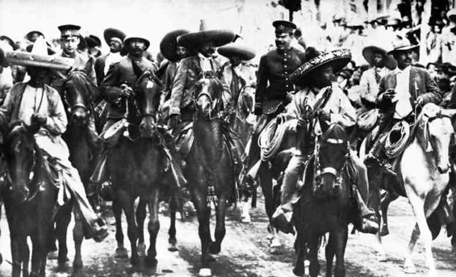

In seguito all'indipendenza messicana, l'Alta California divenne uno Stato messicano, ma gli Stati Uniti si interessarono molto presto alla regione, tanto da annetterla dopo la guerra messicano-statunitense, nel 1848, dando ai territori acquisiti il nome Cessione messicana. La corsa all'oro portò più di duecentomila coloni nel nuovo territorio, e la parte occidentale divenne, a partire dal 1850, il 31º Stato dell'Unione. La California fu alleata dei Nordisti durante la guerra di secessione e si sviluppò rapidamente grazie alle ferrovie. Questo sviluppo continuò ininterrotto per tutto il XX secolo, nonostante i problemi dell'approvvigionamento idrico e dell'inquinamento, che restano anche oggi di attualità, insieme ai problemi legati all'immigrazione e alle tensioni razziali.
L'Alta California appartiene attualmente agli Stati Uniti d'America, mentre la Bassa California fa parte del Messico. La California fu popolata dai Gesuiti, che si stabilirono in entrambe le zone. Nel 1767 Carlo III di Spagna ordinò l'espulsione dei gesuiti dalle proprie terre americane. Due anni dopo, il 2 agosto 1769, una spedizione capeggiata da Gaspar de Portolá, accompagnato dal frate francescano Juan Crespi, raggiunse l'Alta California per espellere dalla zona i Gesuiti e consentire lo stanziamento dei francescani.
Nel 1839 la storia di Los Angeles fu marcata per sempre dalla dichiarazione della città come capoluogo della California. L'americano John C. Fremont occupò, nel 1846, la California sottraendola ai messicani. Due anni dopo, il 2 febbraio 1848, con la firma del Trattato di Guadalupe Hidalgo, si concluse la guerra fra Messico e Stati Uniti d'America e l'Alta California divenne ufficialmente territorio degli USA.